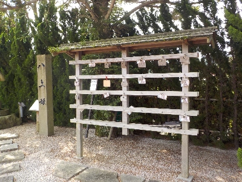
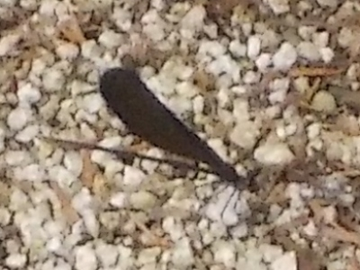
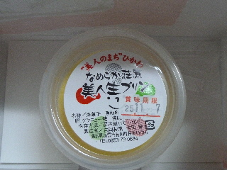
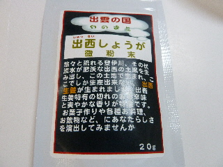

道の駅湯の川には絵馬掛けがあるんだ。
2024/07/13

ここの道の駅には絵馬掛けがあったんですね。知らなかった。
人気が出るといいですね。

絵馬掛けの近くに黒いイトトンボが数匹いました。
日陰で涼しいのかな。
島根県出雲市斐川町学頭825-2
2024/07/13

ここの道の駅には絵馬掛けがあったんですね。知らなかった。
人気が出るといいですね。

絵馬掛けの近くに黒いイトトンボが数匹いました。
日陰で涼しいのかな。
2013/11/04

容器が実用的で可愛くないので、見た目がちょっといまいちですね。
なんだか美人っぽくない気がしました。
カラメル味が濃くて、大人の味かなーなんて思いながらたべました。
2013/11/04
生姜製品は色々ありましたが、今回はコレを買いました。

桃翠園の生姜の粉です。
今まで自分で生生姜を買って作ってたんですが、面倒なので買ってみました。
粉末が小さくて、なめらかでいいですね。
生姜湯にピッタリだって思いました。
2006/01/01
あけましておめでとうございます。
今年もよろしくお願いします。
今日は道の駅「湯の川」に行きました。でも今日は休日で営業していませんでした。
ガッカリです。
道の駅って休日があるんですね。
しかも観光客の利用が多そうな正月にお休みしてるなんて、全然想像してませんでした。
お正月のお出かけは気をつけないといけませんね。